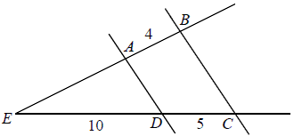
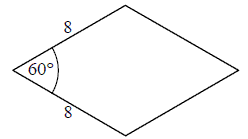

Matura 2012 marzec 9
Wskaż nierówność, którą spełnia liczba \(5\sqrt{3}\)
A.\( |x-1|\lt 2 \)
B.\( |x-2|\lt 3 \)
C.\( |x-3|\lt 4 \)
D.\( |x-4|\lt 5 \)
D
Gdy \(a+b=10\), to wówczas wartość wyrażenia \(\frac{2a^2+4ab+2b^2}{(a+b)^3}\) jest
równa
A.\( 10 \)
B.\( 100 \)
C.\( \frac{1}{5} \)
D.\( \frac{1}{10} \)
C
Cena kurtki po dwóch kolejnych obniżkach, za każdym razem o \(10\%\) jest równa
\(202\) zł \(50\) gr. Przed obniżkami cena tej kurtki była równa
A.\(202\) zł \(70\) gr
B.\(222\) zł \(50\) gr
C.\(243\) zł
D.\(250\) zł
D
Liczba \(128^{-4}:\left ( \frac{1}{32} \right )^4\) jest równa
A.\( 4^{-4} \)
B.\( 2^{-4} \)
C.\( 2^4 \)
D.\( 4^4 \)
A
Liczba \(2\log_3 27 - \log_2 16\) jest równa
A.\(2 \)
B.\(-8 \)
C.\(9 \)
D.\(\frac{3}{2} \)
A
Zbiorem wszystkich rozwiązań nierówności \(x\sqrt{3}+4\ge
2x+\sqrt{12}\) jest przedział
A.\( (-\infty ,2) \)
B.\( (-\infty ,2 \rangle \)
C.\( \langle 2,+\infty ) \)
D.\( (2,+\infty ) \)
B
Liczba wszystkich rozwiązań równania \((2x-3)(x^2-x)=0\)
jest równa
A.\( 0 \)
B.\( 1 \)
C.\( 2 \)
D.\( 3 \)
D
Miejscem zerowym funkcji liniowej \(f(x)=-2x+m+7\) jest
liczba \(3\). Wynika stąd, że
A.\( m=7 \)
B.\( m=1 \)
C.\( m=-1 \)
D.\( m=-7 \)
C
Dla każdego \(x\ne 2\) wyrażenie \(\frac{x-1}{3x-6}-\frac{2}{x-2}\) jest równe
A.\( \frac{x+1}{3x-6} \)
B.\( \frac{x+5}{3x-6} \)
C.\( \frac{x-7}{3x-6} \)
D.\( \frac{x-3}{3x-6} \)
C
Liczby \(12, 18, 2x + 1\) są, w podanej kolejności,
odpowiednio pierwszym, drugim i trzecim wyrazem ciągu geometrycznego. Wynika stąd, że
A.\( x=11\frac{1}{2} \)
B.\( x=12 \)
C.\( x=12\frac{1}{2} \)
D.\( x=13 \)
D
W ciągu arytmetycznym \((a_n)\) dane są \(a_1=2\) i
\(a_2=4\). Suma dziesięciu początkowych wyrazów tego ciągu jest równa
A.\( 30 \)
B.\( 110 \)
C.\( 220 \)
D.\( 2046 \)
B
Kąt \(\alpha \) jest ostry i \(\sin \alpha =0{,}6\). Wówczas
A.\( \cos \alpha =0{,}8 \) i \(\operatorname{tg} \alpha
=0{,}4\)
B.\( \cos \alpha =0{,}4 \) i \(\operatorname{tg} \alpha
=1{,}5\)
C.\( \cos \alpha =0{,}8 \) i \(\operatorname{tg} \alpha
=0{,}75\)
D.\( \cos \alpha =0{,}4 \) i \(\operatorname{tg} \alpha
=0{,}75\)
C
Proste o równaniach \(y=2x-5\) i \(y=(3-m)x+4\) są równoległe. Wynika stąd, że
A.\( m=1 \)
B.\( m=\frac{5}{2} \)
C.\( m=\frac{7}{2} \)
D.\( m=5 \)
A
Proste \(AD\) i \(BC\) są równoległe. Długości odcinków \(ED\), \(DC\) oraz \(AB\)
podane są na rysunku. Długość odcinka \(EA\) jest równa 
A.\( 4 \)
B.\( 8 \)
C.\( 9 \)
D.\( 10 \)
B
Rysunek przedstawia trapez prostokątny i długości trzech jego boków.  Obwód tego trapezu jest równy
Obwód tego trapezu jest równy
Obwód tego trapezu jest równy A.\( 43 \)
B.\( 46 \)
C.\( 48 \)
D.\( 50 \)
B
Objętość sześcianu jest równa \(27\). Długość przekątnej tego sześcianu jest równa
A.\( 2\sqrt{2} \)
B.\( 3\sqrt{2} \)
C.\( 2\sqrt{3} \)
D.\( 3\sqrt{3} \)
D
Bok rombu ma długość \(8\), a kąt ostry ma miarę \(60^\circ \). Wysokość tego rombu
jest więc równa 
A.\( 2\sqrt{3} \)
B.\( 4\sqrt{3} \)
C.\( 6\sqrt{3} \)
D.\( 8\sqrt{3} \)
B
Punkty \(A, B, C, D\) i \(E\) leżą na okręgu o środku \(S\) i dzielą ten okrąg na
pięć łuków równej długości (zobacz rysunek).  Wówczas miara kąta ostrego \(\alpha \) między cięciwą \(AB\) i styczną do tego okręgu
w punkcie \(A\) jest równa
Wówczas miara kąta ostrego \(\alpha \) między cięciwą \(AB\) i styczną do tego okręgu
w punkcie \(A\) jest równa
Wówczas miara kąta ostrego \(\alpha \) między cięciwą \(AB\) i styczną do tego okręgu
w punkcie \(A\) jest równa A.\( \alpha =18^\circ \)
B.\( \alpha =30^\circ \)
C.\( \alpha =36^\circ \)
D.\( \alpha =54^\circ \)
C
Tabela przedstawia zestawienie liczby błędów popełnionych przez zdających część
teoretyczną egzaminu na prawo jazdy.
Średnia arytmetyczna liczby tych błędów popełnionych przez jednego zdającego jest równa
\(1{,}6\). Wynika stąd, że
| Liczba błędów | \(0\) | \(1\) | \(2\) | \(x\) |
| Liczba zdających | \(8\) | \(4\) | \(10\) | \(8\) |
A.\( x=3 \)
B.\( x=4 \)
C.\( x=5 \)
D.\( x=6 \)
A
O zdarzeniach \(A\) oraz \(B\) zawartych w \(\Omega \) wiadomo, że
\(P(A)=\frac{5}{6}, P(B)=\frac{2}{3}\) i \(A\cup B\) jest zdarzeniem pewnym. Wtedy
A.\( P(A\cap B)=\frac{1}{2} \)
B.\( P(A\cap B)=\frac{1}{3} \)
C.\( P(A\cap B)=\frac{1}{4} \)
D.\( P(A\cap B)=\frac{1}{6} \)
A
Rozwiąż nierówność \(-2x^2+3x+2\le 0\) .
\(x\in \left(-\infty ;-\frac{1}{2}\right\rangle \cup \langle 2;+\infty
)\)
Oblicz największą wartość funkcji \(f(x)=-2x^2+16x-15\) w
przedziale \(\langle -2,3 \rangle\).
\(15\)
Powierzchnia boczna stożka po rozwinięciu na płaszczyznę jest ćwiartką koła o
promieniu \(8\) cm. Oblicz wysokość tego stożka.
\(h=2\sqrt{15}\)
Ciąg \((a_n)\) jest określony dla \(n\ge 1\) wzorem \(a_n=-n^2-4\sqrt{3}\) .
Sprawdź którym wyrazem tego ciągu jest liczba \(-3^2-(2+\sqrt{3})^2\).
czwartym
Udowodnij, że dla dowolnych liczb rzeczywistych \(x,y,z\) takich, że \(x+y+z=3\) prawdziwa jest nierówność: \(x^2+y^2+z^2\ge 3\).
Wykaż, że jeżeli ramiona \(AD\) i \(BC\) trapezu \(ABCD\) o podstawach \(AB\) i
\(CD\) zawierają się w prostych prostopadłych (zobacz rysunek), to \(|AB|^2 + |CD|^2 = |AC|^2 +
|BD|^2\).
Ze zbioru wszystkich liczb naturalnych czterocyfrowych losujemy jedną liczbę.
Oblicz prawdopodobieństwo zdarzenia, że otrzymamy liczbę spełniającą jednocześnie trzy następujące
warunki:
(1) liczba jest podzielna przez 25,
(2) cyfry dziesiątek i setek są nieparzyste,
(3) cyfra dziesiątek jest nie większa niż cyfra setek.
(1) liczba jest podzielna przez 25,
(2) cyfry dziesiątek i setek są nieparzyste,
(3) cyfra dziesiątek jest nie większa niż cyfra setek.
\(\frac{1}{200}\)
Prostokątny pas wykładziny dywanowej o wymiarach \(3{,}6\) m na \(7{,}5\) m należy
przeciąć prostopadle do dłuższego boku tak, aby przekątne otrzymanych dwóch prostokątnych kawałków
różniły się o \(1{,}5\) m. Oblicz wymiary większego z otrzymanych kawałków.
\(4{,}8\) m i \(3{,}6\) m
Prosta o równaniu \(y = x + 2\) przecina okrąg o równaniu
\((x - 3)^2 + (y - 5)^2 = 25\) w punktach \(A\) i \(B\). Oblicz
współrzędne punktów \(A\) i \(B\) oraz wyznacz równanie stycznej do danego okręgu przechodzącej
przez jeden z tych punktów.
\(y=-x+8-5\sqrt{2}\)
Podstawą ostrosłupa \(ABCDS\) jest kwadrat \(ABCD\). Wysokość \(SE\) ściany bocznej
\(ADS\) jest jednocześnie wysokością ostrosłupa, a punkt \(E\) jest środkiem krawędzi \(AD\) (zobacz
rysunek). Pole ściany \(ADS\) jest równe \(12\) cm2, a objętość ostrosłupa jest równa
\(48\) cm3. Oblicz miarę kąta nachylenia krawędzi bocznej \(CS\) do płaszczyzny podstawy
ostrosłupa. Wynik zaokrąglij do \(1^\circ \). 
\(31^\circ \)